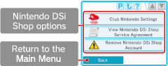

● Link Your Club Nintendo Membership
Club Nintendo members can link an e-mail address they have previously registered on the Nintendo website to their Nintendo DSi Shop Account. To visit the Nintendo website, go to www.nintendo.com/countryselector. By linking your e-mail address with your Nintendo DSi Shop Account, you will become eligible for additional benefits. For details, please see www.club-nintendo.com.
● View Nintendo DSi Shop Service Agreement
View the Nintendo DSi Shop Service Agreement to see detailed information about the terms and conditions regarding the services offered via the Nintendo DSi Shop.
● Remove Your Nintendo DSi Shop Account
Removing your Nintendo DSi Shop Account will remove your current Nintendo DSi Points balance, as well as all downloaded software. You will also be unable to re-download previously downloaded software.